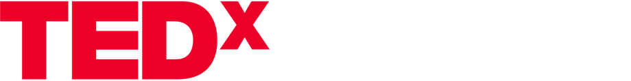

On ne naît pas leader, on le devient !
Élisabeth Moreno · TEDxMontmartre · en français
Des îles du Cap-Vert aux plus hautes responsabilités : un leadership qui commence par l'humain.

Un soir d'idées à Brest
Mars 2027 · Brest · Cent places
Candidatures intervenants ouvertes le 15 novembre.
Deux rives. Un soir pour traverser.
Un soir, huit à neuf talks, cent personnes venues de partout. Des idées que vous n'auriez entendues nulle part ailleurs, et des rencontres que vous n'auriez pas faites autrement.
Des idées nées sur des scènes TEDx, à Paris, à Rennes, et bien plus loin. Quatre talks pour sentir ce qui vous attend.
Élisabeth Moreno · TEDxMontmartre · en français
Des îles du Cap-Vert aux plus hautes responsabilités : un leadership qui commence par l'humain.
Cyril de Sousa Cardoso · TEDxRennes · en français
Et si l'intelligence artificielle rendait les relations humaines plus importantes que jamais ?
Brené Brown · TEDxHouston · en anglais
Une scène locale à Houston, et l'un des talks les plus regardés au monde.
Simon Sinek · TEDxPugetSound · en anglais
Trois cercles dessinés sur un tableau de papier, devenus une référence partout.
Vous portez une idée qui mérite d'être partagée ? Candidatez.
Associez-vous à la première édition. Pourquoi nous soutenir.
Une équipe bénévole, sept pôles. Écrivez-nous.
Des nouvelles toutes les trois semaines, jusqu'à la soirée.
Dans l'esprit de la découverte et de la diffusion des idées, TED a créé un programme appelé TEDx. TEDx est un programme d'événements locaux, auto-organisés, qui rassemblent des personnes pour partager une expérience proche de celle de TED. Notre événement s'appelle TEDxPenfeld, où x = événement TED organisé de façon indépendante. Lors de notre événement TEDxPenfeld, des vidéos de TED Talks et des intervenants en direct se conjuguent pour susciter une discussion et une connexion profondes au sein d'un petit groupe. Les intervenants ne paient jamais pour participer à un événement TEDx. L'examen de leur candidature, le coaching des intervenants et la participation à l'événement, tout comme l'accès à celui-ci, sont fournis gratuitement. La conférence TED fournit des orientations générales pour le programme TEDx, mais les événements TEDx individuels, y compris le nôtre, sont auto-organisés.